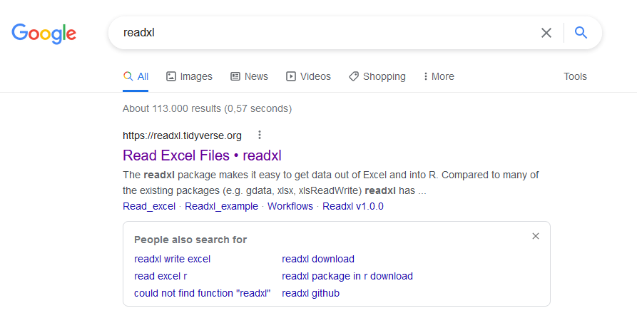

1.5 Help!?
Finding out which functions to use for a specific task and how to use them is perhaps the most important part of using R. Luckily, there are a lot of tools and online tutorials to help you!
1.5.1 How to do … in R?
The most common question all R users ask themselves, is “how can I do … in R”? The answer is simple: just Google it!. Given the very active R user community, the answer to your question will very likely be found online — often you will even find multiple solutions to the same question!
Some solutions will require specific R packages, which extend the functionalities of the base R packages. As mentioned above, R packages can be downloaded and installed from CRAN. A list of all CRAN packages is available at http://cran.r-project.org/web/packages/available_packages_by_name.html. R packages are also bundled as CRAN Task Views: http://cran.r-project.org/web/views/.
A nice online interface to search for specific functions is http://www.rdocumentation.org. There is also an R package called sos to help you find your way through the thousands of R functions.
Since R is open source and every community member can create a package and make it available, this means that for certain analysis you may find many different packages online and it may be hard to choose the “best” one. In order to choose which package is reliable and acceptable to the scientific community, you could research for publications about the development of the package and see if other people in your field use the package for similar analysis. It is also useful to look at the version history of the package — if there are no recent updates of the package, this might indicate that it is no longer actively supported. If you end up using a package in your scientific publication it is customary to cite the related development articles. You can use citation("package_name") for a recommendation on how to cite the package.
Exercise 1.4 Which R packages exist for doing meta-analysis? Try to use different ways of finding help.
1.5.2 How to use a certain function?
The best way to get started with a certain function, is by looking at the help-file for that function, using either function help() or the ?-operator.
Help files can be a bit cumbersome to read, but they often provide very valuable information. Help files are always structured in a similar way, providing a detailed description of the arguments of the function, and often some examples demonstrating the use of the function.
If you have forgotten the exact name of a function, but you remember it partially, you can use the R function apropos() to find objects, including functions, by (partial) name.
1.5.3 How to use a certain package?
As for functions, we can use function help() or the ?-operator followed by the name of the package to open the help file for the package. Note however that not all packages have such a general help file.
To know which functions are available in a certain package, use library(help = "package_name").
Some package also come with so-called vignettes, PDF-files that often contain a tutorial on how to use the package. Increasingly, package authors maintain a website where they host their package vignettes or other tutorials.
Example 1.9 Viewing the vignettes of package readxl
Example 1.10 Google is your friend 
Finally, some packages also provide demos to get you started.
Exercise 1.5 What is the name of the readxl function that allows you to list all sheets in an Excel spreadsheet?
1.5.4 Online support
One of the strengths of R is its very active user community. For the more popular packages, you will therefore find a large number of online tutorials. Remember, when using R, Google is your best friend!
There are also different general websites dedicated to R; some of the most useful ones are:
http://www.statmethods.net/
Quick-R , a.k.a R in Actionhttp://cookbook-r.com/
Solutions to common tasks and problems in analyzing datahttps://bookdown.org/ndphillips/YaRrr/
YaRrr! The Pirate’s Guide to Rhttp://www.ats.ucla.edu/stat/r/
Resources to help you learn and use R, with various statistical exampleshttp://www.r-bloggers.com/
R news and tutorials contributed by over 500 R bloggershttp://www.burns-stat.com/documents/books/the-r-inferno/
The R inferno: If you are using R and you think you are in hell, this is a map for you
Finally, you can subscribe to the official R mailing lists, to stay up-to-date about new developments in R, and to read and contribute to discussions about basic and more advanced R topics: https://www.r-project.org/mail.html.